CVIT
Multipurpose Personal Portfolio / vCard / CV / Resume Template
Thank you for purchasing our theme. If you have any questions that are beyond the scope of this help file, please feel free to email via our user page contact form. Thank you so much!
How to get help:
We run support 24/7. You can expect a response within 24 hours.
- Support Requests Are For:
- - Help Using Templates
- - Instructions Setting Up Templates
- - Bug Reports And Fixes
- Support Requests Aren’t For:
- - Help With 3rd Party Plugins
- - Integration of 3rd Party Plugins
- - Free Customization Requests of Our Templates
[Note: Need Some Premium Customization Done. Contact Us Via Our User Page Contact Form. ]
CVIT is a Multipurpose Personal Portfolio / vCard / CV / Resume Template designed for All kinds of Personal Purpose. It's an HTML5 template based on latest Bootstrap 3.3.7. Anyone can easily update/edit this template to follow our Well Sorted Documentation.
Main Features of "CVIT":
- - Latest Bootstrap v3.3.7 Ready
- - Total 3 Version
- - Working Hire Me & Contact Form
- - Retina Ready
- - Clean Design
- - Fully Responsive
- - MailChimp Integreted
- - Modern Cross Browser Support
- - W3C Validated Code
Other Features of "CVIT":
- - Google Fonts
- - Font Awesome Icons
- - Well Documented
- - and much more features…
Via FTP:
- Open up your FTP Software of choice and connect to your hosting
- Browse to required directory (Normally: ./public_html)
- Unzip the 'main_files.zip' and choose which templates to upload.
- Upload the final template to the server.
- ./main_files
- /version-1
- ___ /index.html
- ___ /404.html
- /version-2
- ___ /index.html
- ___ /404.html
- /version-3
- ___ /index.html
- ___ /404.html
The "CVIT" template is a responsive HTML template based on Bootstrap 3.3.7. The structure based on a flexible grid that lets you change HTML pages quickly and logically with a nestable system.
If you would like to edit the layout of any elements in whole template, you would do the following:
Open any '.html' or, '.css', so that is extremely easy to change any html markup and css attributes. Simply find the related and commented heading in the html or, css file and make your magic.
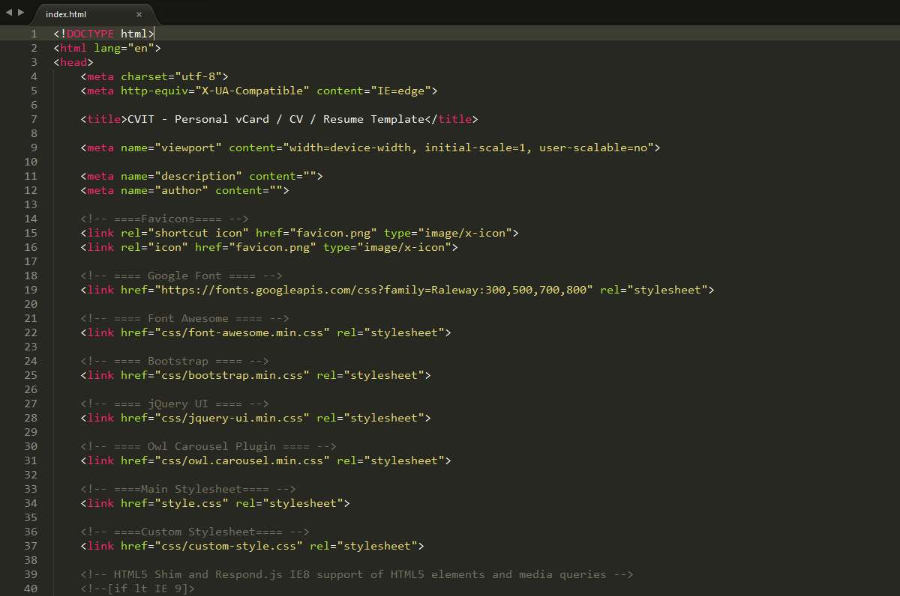
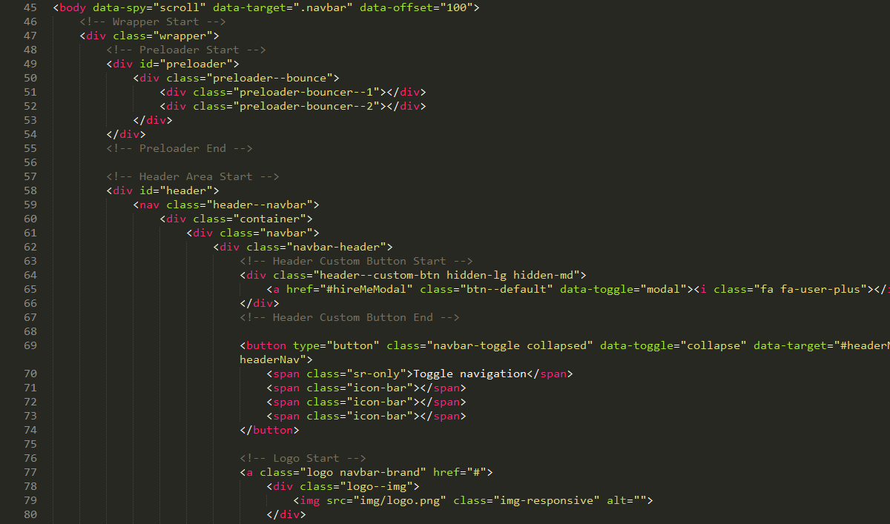
"CVIT" using the following CSS files:
css/font-awesome.min.css
The css file for font-awesome icons. To see all the available icons and instructions on how to use them click here
css/bootstrap.min.css
The main responsive grid stylesheets, from Bootstrap 3 framework. It is recommended to make any changes/additions to style.css and keep bootsrap.css and bootsrap-theme.css as it are. In this way, you can easily upgrade the grid framework when Bootstrap releases an update.
css/jquery-ui.min.css
The main responsive grid stylesheets, from Bootstrap 3 framework. It is recommended to make any changes/additions to style.css and keep bootsrap.css and bootsrap-theme.css as it are. In this way, you can easily upgrade the grid framework when Bootstrap releases an update.
css/owl.carousel.min.css
The css file for owl carousel.
style.css
The main css file
css/custom-style.css
The custom css file for custom styles.
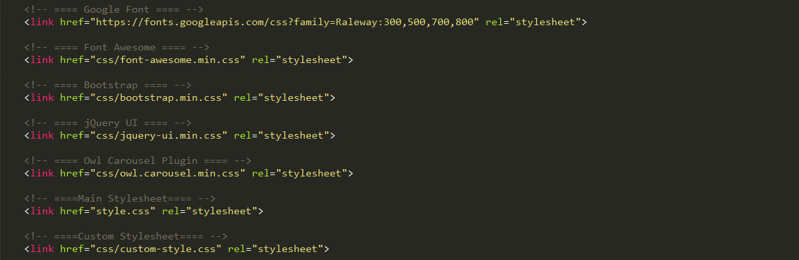
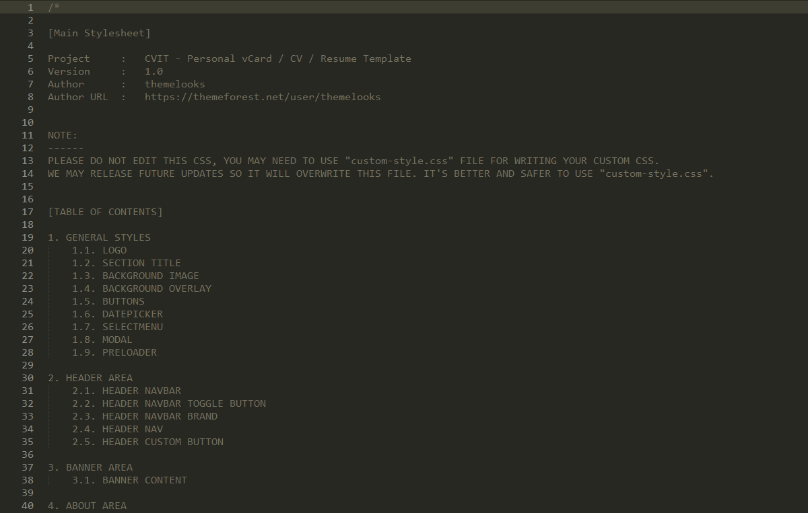
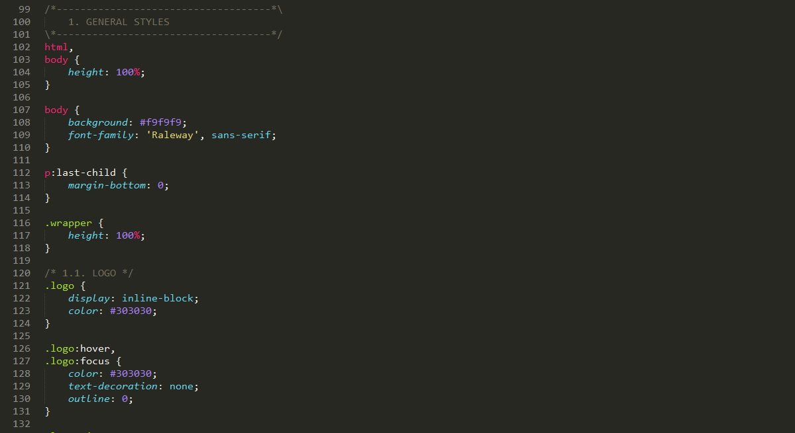
js/jquery.min.js
The jQuery Framework.
js/bootstrap.min.js
The main js file that hook the supported scripts of Bootstrap 3 framework.
js/jquery-ui.min.js
The script that using for jquery ui elements.
js/owl.carousel.min.js
The script that using for slider.
js/isotope-docs.min.js
The script that using for masonary layout and filtering.
js/jquery.form.min.js
The script that using for form handling.
js/jquery.validate.min.js
The script that using for form validation.
js/gmaps.min.js
The script that using for google maps
js/jquery.waypoints.min.js
The script that using for scroll events
js/animatescroll.min.js
The script that using for scroll animation
js/jquery.counterup.min.js
The script that using for counter
js/jquery.nicescroll.min.js
The script that using for custom scrollbars
js/parallax.min.js
The script that using for background parallax effects
js/jquery.tubular.1.0.js
The script that using for background video
js/retina.min.js
The script that using for hight resolution images
js/main.js
The main script for the template
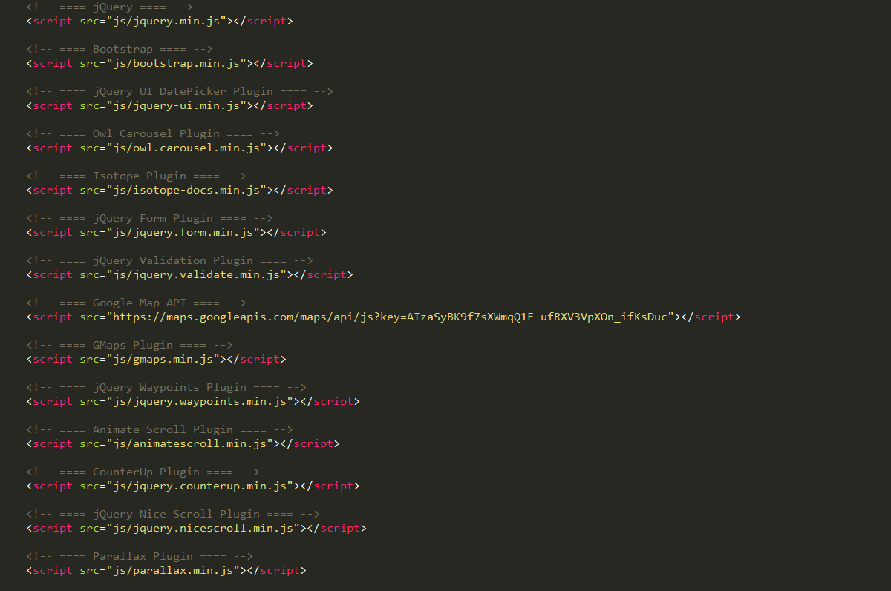
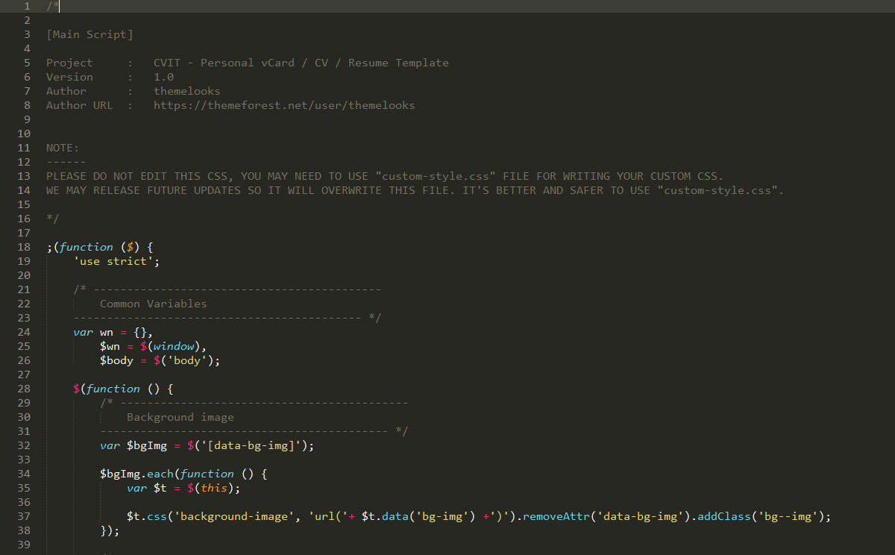
Photos:
- All 'images' used on the demo site is for demonstration purposes only and are not included in the main download file.
- All images collected from 'Google Image Search'
Fonts Used:
Frameworks / Libraries:
Plugins Used:
How can I remove the "Preloader"?
- Open 'index.html' file.
- Then search for the comment 'Preloader Start'
- Then remove the markup
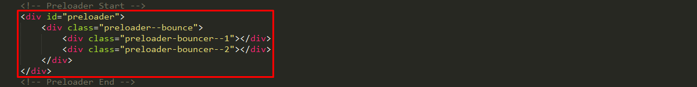
How can I change the "Logo"?
- Open 'index.html' file.
- Then search for the comment 'Logo Start'
- Update the logo name
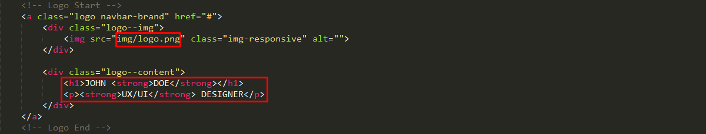
How can I change "Banner Text"?
- Open 'index.html' file.
- Then search for the comment 'Banner Content Start'
- Update the content
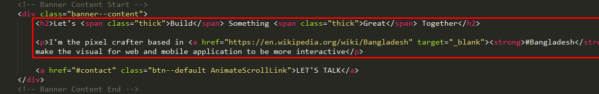
How can I change "Banner Background Image"?
- Open 'index.html' file.
- Then search for the comment 'Banner Area Start'
- Update the "data-parallax-bg-img" attribute value
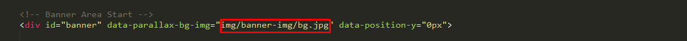
How can I change "Banner Background Video"?
- Open 'index.html' file.
- Then search for the comment 'Banner Area Start'
- Update the "data-bg-video" attribute value
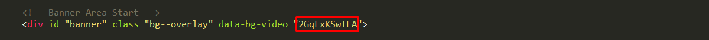
How can I change "Banner Slider Background Image"?
- Open 'index.html' file.
- Then search for the comment 'Banner Item Start'
- Update the "data-bg-img" attribute value
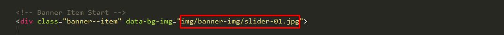
How can I change "Banner Slider Background Video"?
- Open 'index.html' file.
- Then search for the comment 'Banner Item Start'
- Update the "data-bg-video" attribute value
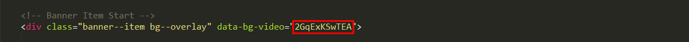
How can I change "WHYME Content"?
- Open 'index.html' file.
- Then search for the comment 'Feedback Accordion Item Start'
- Update the content
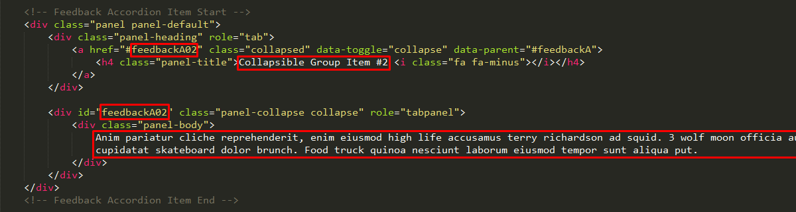
How can I change "CLIENT'S FEEDBACK Content"?
- Open 'index.html' file.
- Then search for the comment 'Feedback Item Start'
- Update the content
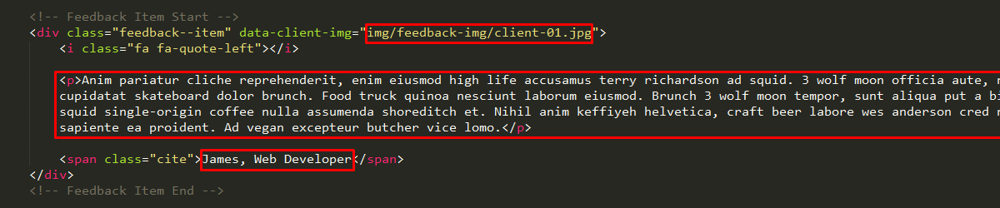
How can I change "Counter Content"?
- Open 'index.html' file.
- Then search for the comment 'Counter Item Start'
- Update the numbers and text
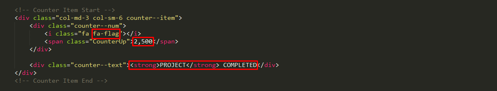
How can I change "Google Map Position"?
- Open 'index.html' file.
- Then search for the comment 'Map Area Start'
- Update the 'data-latitude', 'data-longitude' and 'data-zoom' attribute value
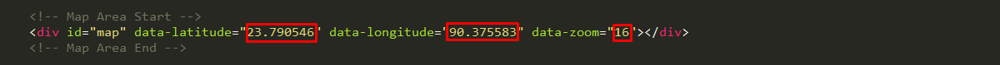
How can I change "Google Map API"?
- Open 'index.html' file.
- Then search for the comment 'Google Map API'
- Update the 'API Key' with your own API Key. (Here's a guide about How To Get A Key?)
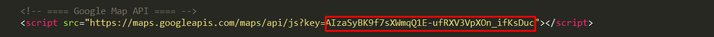
How can I change the "Mailchimp Subscription List Link"?
- Open 'index.html' file.
- Then search for the comment 'Subscribe Form Start'
- Update the form action link value
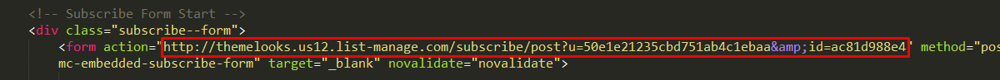
How can I change "Copyright Text"?
- Open 'index.html' file.
- Then search for the comment 'Footer Copyright Start'
- Update the text
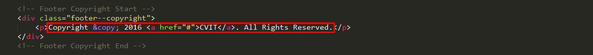
How can I change "Mail Address"?
- Open 'contact.php' or, 'hire-me.php' file.
- Then search for the comment 'Replace this with your own email address'
- Update the email adddress
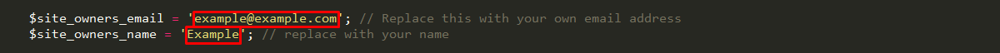
18 January, 2017 - Version 1.2 (Changelog)
// # List of updates
// ------------------------------
*. PHPMailer security update